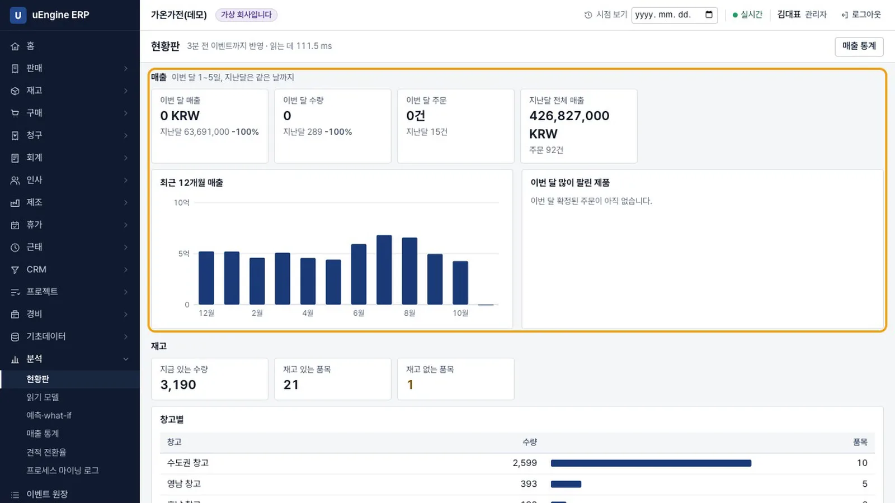
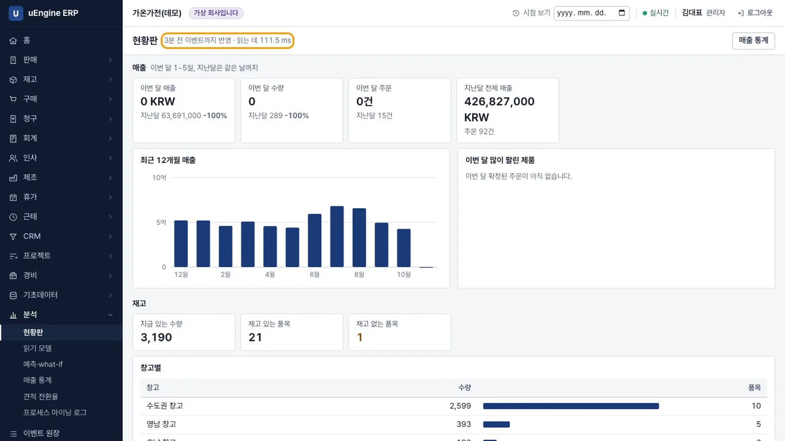
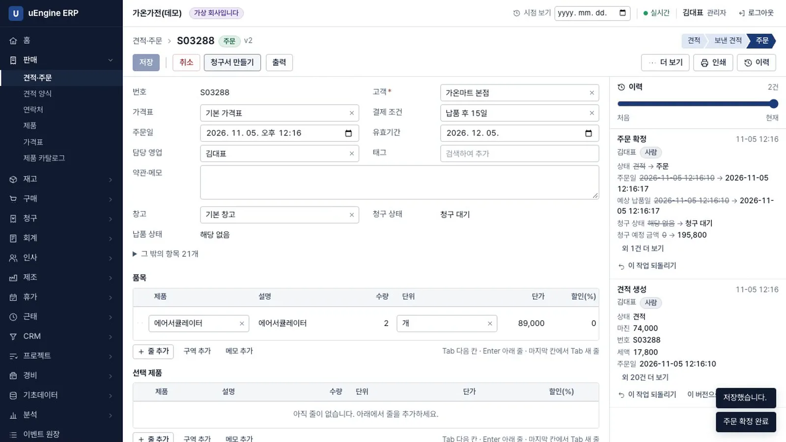
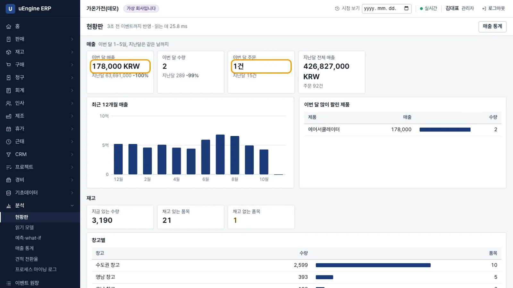
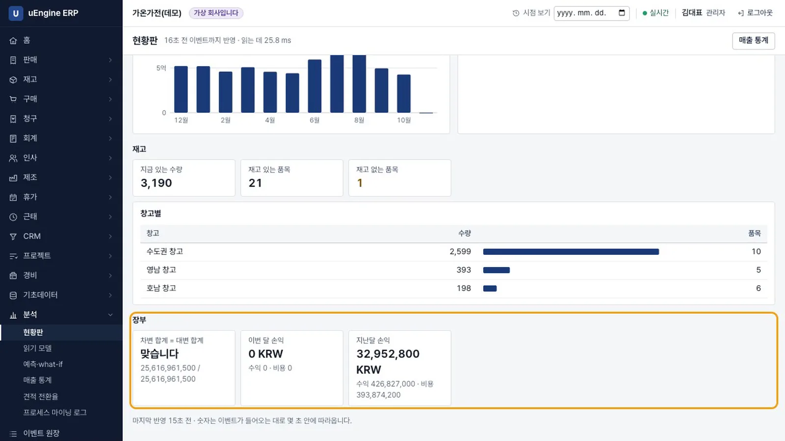
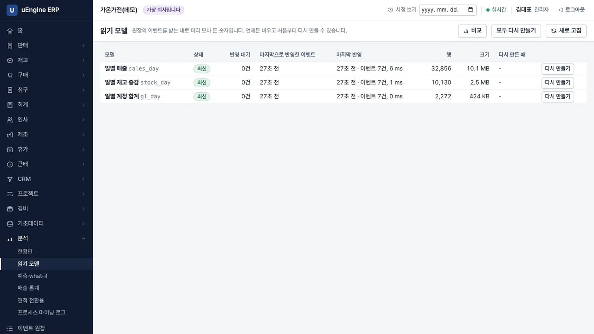
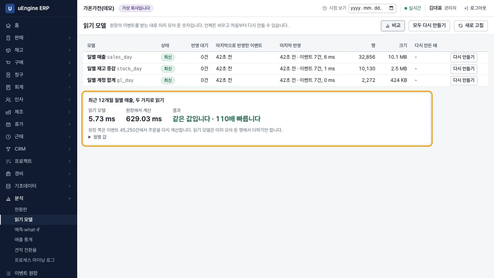
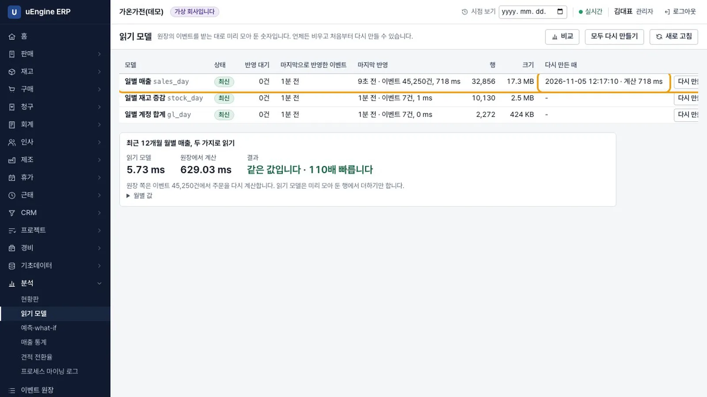

현황판과 분석 화면은 원장을 매번 처음부터 계산하지 않습니다. 이벤트가 들어올 때마다 미리 모아 둔 읽기 모델을 읽습니다. 다른 브라우저에서 주문을 확정하면 몇 초 안에 현황판에 반영됩니다. 읽기 모델은 언제든 원장에서 다시 만들 수 있습니다.
무엇을 · 왜#
쓰기와 읽기를 나누는 방식을 CQRS라고 합니다. 명령은 원장에 이벤트를 쓰고, 읽는 쪽은 이벤트로 필요한 표를 미리 만들어 둡니다. uEngine ERP는 숫자가 정확해야 하는 곳과 몇 초 늦어도 되는 곳을 나눕니다.
| 무엇을 | 어떻게 | 쓰는 화면 |
|---|---|---|
| 재고, 분개 | 명령과 같은 트랜잭션에서 파생 표에 함께 씁니다 | 재고 현황, 장부, 재무제표, 결산 |
| 일별 매출, 일별 재고 증감, 일별 계정 합계 | 읽기 모델이 5초마다 새 이벤트만 반영합니다 | 현황판, 예측·what-if, 매출 통계 |
3년 치 기록이 있는 가상 회사(이벤트 약 4만 5천 건)에서 같은 질문을 두 방식으로 계산해 시간을 쟀습니다. 다른 작업도 실행 중인 개발 PC에서 잰 값이므로, 시간 자체보다 두 방식의 차이를 보세요.
| 질문 | 원장에서 다시 계산 | 읽기 모델 |
|---|---|---|
| 현황판 전체 | 974 ms | 17 ms |
| 최근 12개월 월별 매출 | 390 ms | 2.4 ms |
| 예측 화면이 처음 읽는 데이터 | 1.6 s | 0.5 s |
| 세 모델을 처음부터 다시 만들기 | - | 0.87 s |
장부 보고서는 명령과 같은 트랜잭션에서 쓴 분개 표를 읽으므로 이미 빠릅니다(시산표 16 ms). 그래서 읽기 모델로 바꾸지 않았습니다. 측정 방법과 매회 결과는 저장소의 experiments/read-models/README.md에 있습니다.
먼저 알아 둘 것
- 5장처럼 3년 치 기록이 있는 가상 회사(가온가전)를 씁니다. 숫자는 모두 지어낸 것입니다.
- pg_cron이 5초마다 새 이벤트를 읽기 모델에 반영합니다. pg_cron이 없는 프로젝트에서는 화면이 열려 있을 때 반영하며, 읽기 모델 화면에 이 사실을 알립니다.
- 과거 시점을 보거나 반영이 많이 밀리거나 오류가 나면 원장에서 직접 계산합니다. 볼 수 있는 범위도 원장과 같습니다. 원장에서 볼 수 없는 숫자는 읽기 모델에서도 볼 수 없습니다.
- 녹화에서는 두 번째 브라우저도 같은 관리자(김대표)로 로그인했습니다.
따라 하기#
관리자(김대표)로 로그인해 시작합니다.
- 현황판 열기. 분석 → 현황판을 엽니다. 녹화한 날(11월 5일)에는 이번 달 1~5일 매출이
0 KRW, 지난달 같은 기간은 63,691,000, 지난달 전체는 426,827,000(주문 92건)입니다. 재고는 3,190개입니다. 재고가 있는 품목은 21개, 없는 품목은 1개입니다.
현황판 - 반영 표시 보기. 제목 옆에
3분 전 이벤트까지 반영 · 읽는 데 111.5 ms처럼 어느 시점의 이벤트까지 반영했는지와 읽는 데 걸린 시간이 나옵니다.
반영 표시 - 다른 브라우저에서 주문 확정. 다른 브라우저(또는 비공개 창)에서 판매 → 견적·주문 → 새로 만들기를 누릅니다. 고객은
가온마트 본점, 제품은에어서큘레이터2개로 저장하고 주문 확정을 누릅니다. 녹화에서 주문 번호는S03288, 공급가액은 178,000이었습니다.
주문 확정 - 현황판이 따라온다. 첫 브라우저로 돌아갑니다. 새로 고침하지 않아도 이번 달 매출은
178,000 KRW, 주문은1건으로 바뀝니다. 많이 팔린 제품에는 에어서큘레이터가 나옵니다. 주문 확정은 읽기 모델을 기다리지 않습니다.
현황판이 따라온다 - 장부 칸 보기. 아래쪽 장부에
차변 합계 = 대변 합계 맞습니다와 25,616,961,500, 이번 달·지난달 손익이 나옵니다. 장부 숫자는 회계 역할이 있는 사람과 관리자에게만 보입니다.
장부 칸 - 읽기 모델 화면. 분석 → 읽기 모델을 엽니다. 관리자만 열 수 있습니다. 일별 매출, 일별 재고 증감, 일별 계정 합계가 모두
최신이고 반영 대기는0건입니다. 각 모델의 행 수는 차례로 32,856, 10,130, 2,272개였습니다.
읽기 모델 - 비교. 비교를 누르면 최근 12개월 월별 매출을 두 방식으로 계산합니다. 녹화에서는 읽기 모델이
5.73 ms, 원장에서 계산한 시간이629.03 ms였고,같은 값입니다 · 110배 빠릅니다라고 나왔습니다.
비교 - 다시 만들기. 일별 매출 줄의 다시 만들기를 누르고 확인합니다. 원장의 첫 이벤트부터 읽기 모델을 다시 채웁니다. 다시 만든 때에는
계산 718 ms가 남습니다. 현황판의 숫자는 그대로입니다.
다시 만들기
확인 문제#
읽기 모델 때문에 주문 확정이 느려지나요?
아니요. 명령은 읽기 모델에 쓰지 않습니다. 읽기 모델은 따로 실행되며 끝난 트랜잭션의 이벤트만 읽습니다. 읽기 모델 반영을 200 ms마다 함께 실행해도 명령 하나에 걸리는 시간의 중앙값은 5.4 ms와 5.6 ms로 차이가 없었습니다.
읽기 모델의 숫자가 원장과 다를 수 있나요?
반영을 기다리는 몇 초 동안은 원장보다 늦을 수 있습니다. 화면 위쪽 표시와 읽기 모델 화면의 반영 대기에서 확인할 수 있습니다. 반영이 끝나면 원장에서 계산한 값과 같습니다. 수량 변경, 취소, 되돌리기와 그 되돌리기의 취소, 단위·시간대 변경에서도 같은 값이 나오는지 시험으로 확인합니다.
결산과 재무제표는 왜 읽기 모델을 쓰지 않나요?
재고와 분개는 명령과 같은 트랜잭션에서 파생 표에 함께 쓰므로 언제나 정확합니다. 3년 치 기록에서도 시산표가 16 ms에 나옵니다. 몇 초 늦을 수 있는 읽기 모델로 바꿔도 얻는 이점이 적습니다.